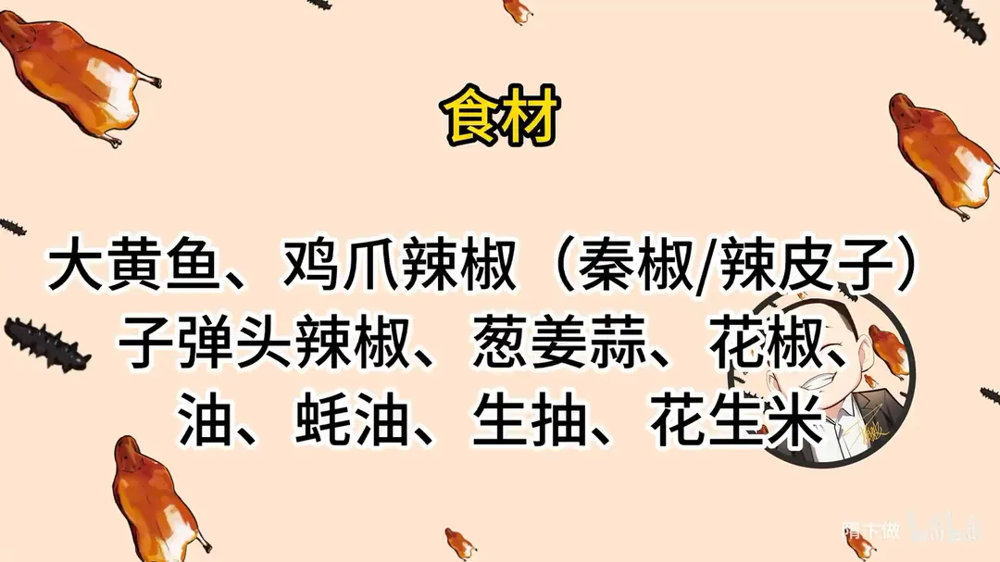
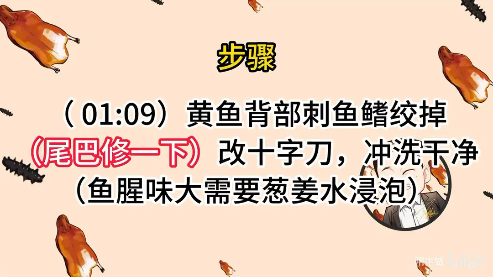
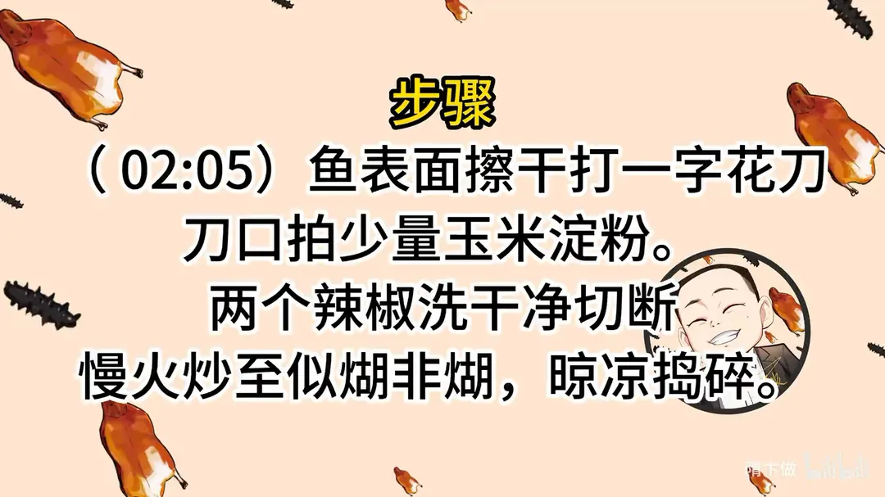
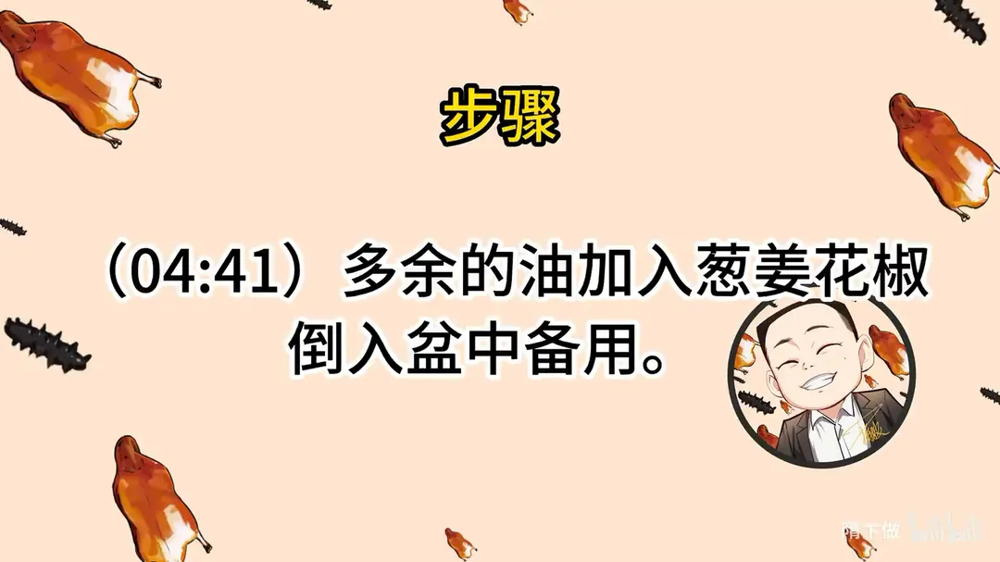
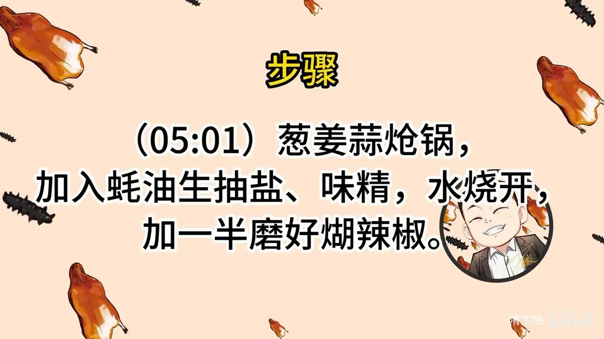
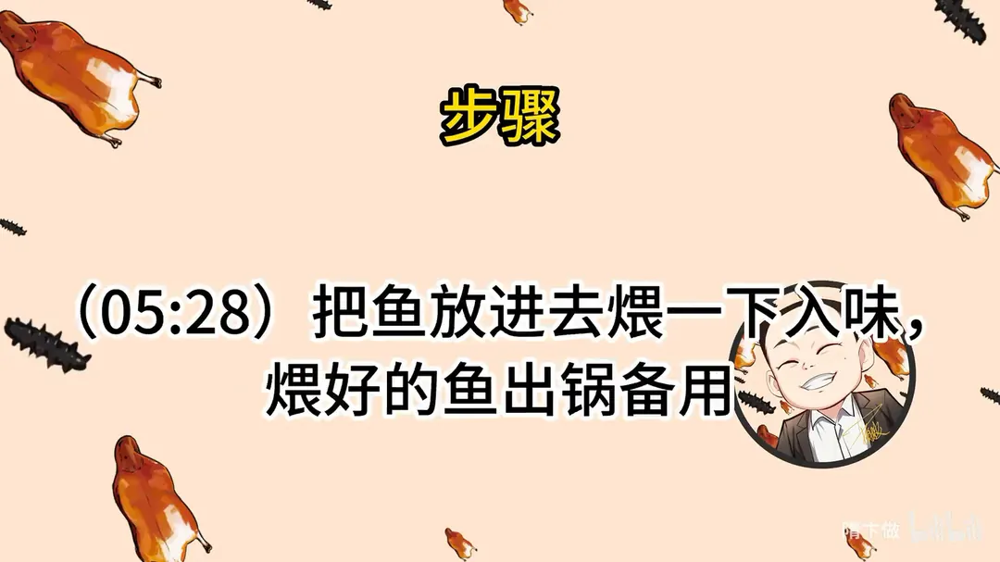
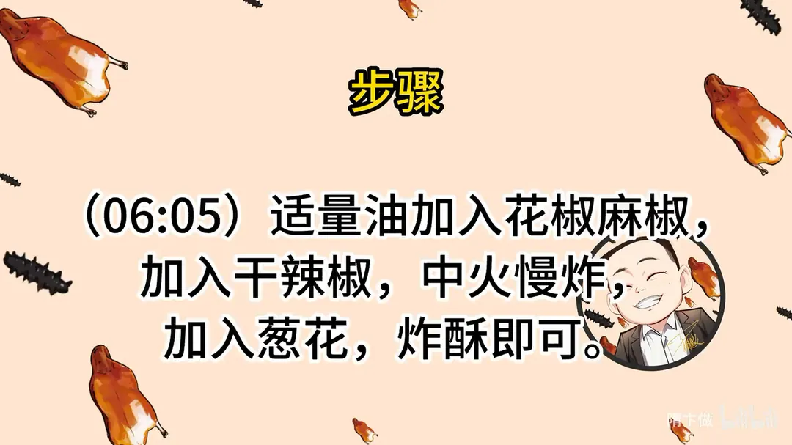
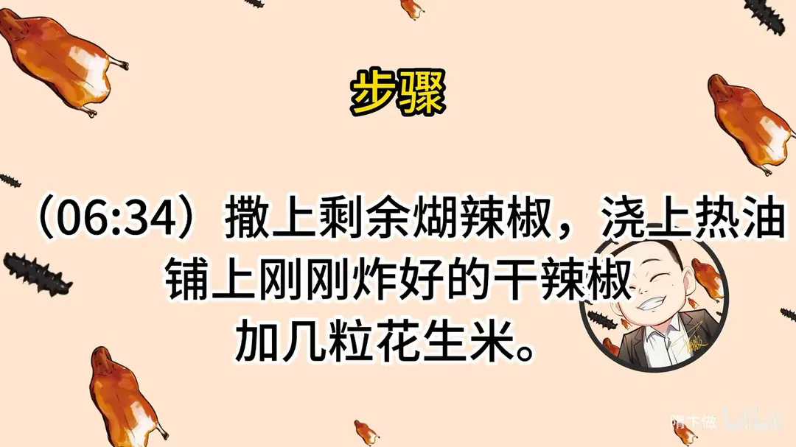

煳辣炝锅鱼
隋卞一做。大黄鱼铰掉背刺修尾，葱姜水浸泡去腥，六成油温大火炸出硬壳，再用葱姜蒜蚝油生抽调汁煨入味，最后现炒煳辣椒浇热油。
原视频：https://www.bilibili.com/video/BV1Vh4y1f7Cc
食材
大黄鱼、鸡爪辣椒、子弹头辣椒 等 13 样
| 类别 | 用料 | 用量 |
|---|---|---|
| 主料 | 大黄鱼 | 适量 |
| 辣椒 | 鸡爪辣椒（秦椒/辣皮子） | 适量 |
| 辣椒 | 子弹头辣椒 | 适量 |
| 小料 | 葱姜蒜 | 适量 |
| 小料 | 花椒 | 适量 |
| 小料 | 麻椒 | 适量 |
| 调料 | 油 | 适量 |
| 调料 | 蚝油 | 适量 |
| 调料 | 生抽 | 适量 |
| 调料 | 盐 | 适量 |
| 调料 | 味精 | 适量 |
| 挂粉 | 玉米淀粉 | 适量 |
| 点缀 | 花生米 | 适量 |
步骤
- 收拾鱼：黄鱼背部刺、鱼鳍铰掉，尾巴修一下；改十字刀，冲洗干净。鱼腥味大需要葱姜水浸泡。
- 打花刀：鱼表面擦干，打一字花刀，刀口拍少量玉米淀粉。
- 炒煳辣椒：两个辣椒洗干净切段，慢火炒至似糊非糊，晾凉捣碎。
- 炸鱼：油加热至六成热，油刚好可以没过鱼；全程大火把鱼炸熟，表面炸出金黄硬壳即可。
- 留油：多余的油加入葱姜、花椒，倒入盆中备用。
- 调汁：葱姜蒜炝锅，加入蚝油、生抽、盐、味精，水烧开，加一半磨好的煳辣椒。
- 煨鱼：把鱼放进去煨一下入味，煨好的鱼出锅备用。
- 炸香料：适量油加入花椒、麻椒，加入干辣椒，中火慢炸，加入葱花，炸酥即可。
- 装盘：撒上剩余煳辣椒，浇上热油，铺上刚刚炸好的干辣椒，加几粒花生米。
讲解要点
难度：★★★☆☆（手法不算复杂，难点是煳辣椒的火候和炸鱼的油温）
为什么这么做
- 鱼改十字刀：一是好炸、炸得透，二是便于入味；刀口拍一点玉米淀粉，下锅不容易把油弄脏。
- 新鲜的鱼只需洗净：新鲜冰鲜鱼不用过多处理，洗干净就行；不够新鲜或换成草鱼、鲤鱼，先用葱姜水泡一下，再用干布把表面水分蘸干。
- 煳辣椒炒到似煳非糊：只有这个状态才能激发出香味；炒糊了就发苦。辣椒湿润时用慢火把水分炒掉，干辣椒可以直接大火炒糊香。
- 翻锅不必来回抖：翻锅的目的是让原料受热均匀，简单扒拉也行，别让辣椒离开热锅、损失热量。
- 炸鱼全程大火、六成油温：鱼下锅油温马上掉下来，小火炸不脆；炸到表面金黄硬壳、刀口打透了，里面百分之百熟。
- 炸鱼的油加葱姜花椒处理：炸过鱼的油有腥味，下葱姜花椒炸一下倒出，油就可以继续用。
- 先用一半煳辣椒煨鱼：汤汁里加煳辣椒烧开，把炸干的鱼放进去快速煨，就是补底味，炸得干的鱼很快能把汤汁吸进去。
- 最后现炸干辣椒、浇热油：煳辣椒撒在鱼上，热油一浇香气冲出来，再铺炸酥的辣椒和花生米，是「炝锅」的最后一笔。
容易翻车
- 煳辣椒炒过头就苦，看到表面刚上色就出锅，晾凉后才会变酥脆。
- 辣椒捣得不要太碎，太碎没有口感。
- 油温不够就下鱼，鱼皮会脱、吸油又多。
- 鱼身一定要炸干，汤汁才吸得进去；炸得太湿，味道进不去。
- 下鱼时小心油溅，尾巴一侧不顺手可以用夹子帮着固定。
原片尾卡








原片文案
AI 字幕校准稿
这是从贵州回来学的第一个菜，煳辣炝锅鱼。店里这道菜卖 98 一份，用的就是黄鱼，这个辣椒配黄鱼，鱼很新鲜，腌一下，味道全靠高温一炸，炸完之后用煳辣椒炒汁往上一浇，鱼趁热就会把那个味吸得很足，吃着特别酥脆。
做之前有几个注意事项。你们自己在家用什么鱼都可以，我们就按原版做，用的黄鱼，鱼可以稍微大一点。第二个就是辣椒，我们用的是两种：一种是我托人从贵州带过来的鸡爪辣椒，特点是不很辣，你们不用专门买，用陕西的秦椒、秦椒的辣皮子都可以，都是那种香而不辣的；另一种选用了普通的子弹头辣椒。两个辣椒加一块，辣味就比较合适。
首先把黄鱼处理一下，背部的大刺给铰掉，尾巴修一下做个造型，切得很规矩。然后改十字刀，一是好炸，二是便于入味。今天买的鱼比较新鲜，冰鲜的，连动都没动过，所以不用过多处理，洗一下就可以了。如果鱼的新鲜程度一般，或者是草鱼、鲤鱼之类的，拿葱姜水给它泡一下。
拿一块干净的布把表面的水分蘸一下，然后在鱼的表面、花刀的地方少拍点玉米淀粉，千万不能多，多了就挂一层糊。放在旁边稍微等一下，让鱼表面的水分把玉米淀粉吃住，下锅油炸的时候不容易把油弄脏。
这个辣椒买完先洗一下表面的泥沙，切成段，把籽儿去掉，另一种辣椒也一样掰一下。咱们先做煳辣椒：把锅擦干，辣椒放进去。这种辣椒湿度很大，炒的时候要用慢火，把水分炒掉一部分；如果你的辣椒很干、哗啦哗啦的，那就大火直接炒出糊香。跟炒菜翻锅一样，主要目的就是让原料受热均匀，简单扒拉也没有问题，别让它离开热锅太久，那样就丧失了一部分热量、增加了制作时间。表面上色就可以了，出锅。
你们看，煳辣椒一定要炒到这种似煳非糊的状态，才能激发出那种香味来；如果炒糊了，回头就苦了，就不好吃了。刚炒完是热的，不会那么酥脆，晾一晾、吹一吹，吹凉了。
然后捣碎，不用搞得特别碎，太碎了也没有口感。
下面开始炸鱼，六成热，全程大火，因为这鱼下去之后油温马上就下来了，所以要全程大火炸。鱼是炸熟炸透，家里边做用一斤半左右的就差不多了。鱼表面炸出硬壳、金黄色就可以了，咱们刀打得比较深，只要炸成这个色了，百分之百熟了，把鱼捞出来。
炸完鱼的油里有腥味怎么办？炸完之后往里边放点葱姜花椒，倒到盆里边，这样的油里边就没有腥味了，油就可以继续用。
把葱姜蒜炝锅，来蚝油、生抽，加水，加点盐、味精调调味儿，烧开，把磨好的煳辣椒放一半进去，这汤汁的香味立马就上来了。把鱼放进去快速煨一下，这一步的目的就是给鱼上点底味，防止鱼的底味不足。因为我们炸鱼比较干，所以汤汁应该很快就吸进去了，把汤汁浇在鱼的上面，出锅装盘，把原汁浇上。
还是刚才那个油，往锅里面倒一下，然后花椒、麻椒凉油下锅，再放干辣椒，中火慢炸，辣椒炸酥，加点小葱花，把辣椒捞出。让锅里的油继续加热，另一半的煳辣椒撒上面，热油浇上，把炸好的辣椒盖上，再放几粒花生米。
来一块最肥的地方，肚皮的地方是最肥的，也是最容易入味的地方。好香啊，这个辣椒真的不错，辣味很合，但不是那种死辣，一点点微微的麻。因为鱼本身咱们炸得也干，让所有的味道全部都进到鱼里面去了，所以这个鱼一定得表面炸干，它才能把汁儿味儿吸得很足，不干这味道就不好进去。一定要炸干，又麻又辣，又有鱼肉本身的那种香。
我尝口这个辣椒，哇，我都听见咔咔的声音，这个辣椒看着就脆，真的脆。包括表层咱们放的煳辣椒的味道，在鱼肉当中也能体现出来。这个如果多放点水，再一加热，里面咕嘟咕嘟的，就像吃火锅一样，也特别好吃。